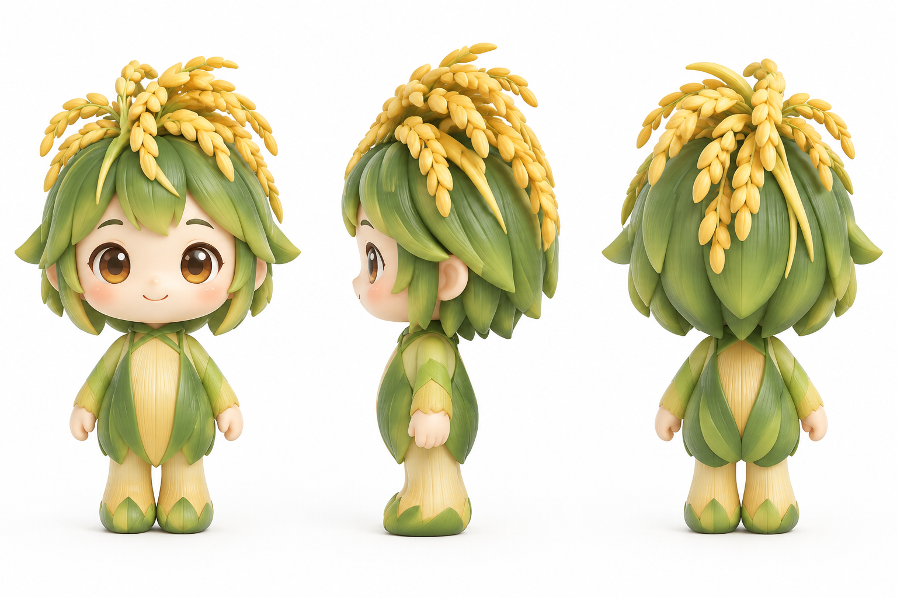

🌱 初见泥土
一粒小小的种子落进温暖的田土。它还不知道，未来会遇见怎样的世界。
从一滴雨水落进田野，到一粒稻谷走上餐桌。跟随小小的水稻精灵禾小满，走进真实的农田，看看粮食如何生长，也看看每一碗米饭背后的守护。
开启成长之旅 ↗ 和禾小满互动
成长从来不是一帆风顺。每一次风雨、每一次帮助，都让一粒种子离丰收更近一点。
一粒小小的种子落进温暖的田土。它还不知道，未来会遇见怎样的世界。
“咦？原来雨水是凉凉的！”细雨滋润着禾苗，也带来了第一次关于自然的惊喜。
暴雨压弯叶片，烈日让土地干裂，虫害也悄悄靠近。小小的禾苗第一次感到害怕。
农民发现受伤的禾苗，扶起倒伏的稻株、查看田间水情。那些看似平凡的动作，藏着日复一日的经验与辛劳。
气象预报、科学灌溉、无人机巡田与精准植保，让种植更科学，也帮助人们更早发现问题。
经历风雨的禾苗结出稻穗。一粒米的旅程走过春夏，也凝结着土地、阳光和人的付出。
别看我小小一只，我的成长故事里有很多值得了解的事。
好奇、勇敢，也会害怕。每一次遇见困难，都让它更懂得生命的韧性。
播种、育秧、灌溉、除草、收割。粮食背后，是农民长期的劳动与经验。
传感器、气象信息和智能设备，帮助人们观察农田、判断风险、科学管理。
传统经验与现代科技并肩，让每一寸土地得到更细致的照料。
看天时、察水情、因地制宜。长期积累的种植经验，是农业生产的重要基础。
天气预报和田间监测能帮助农户关注暴雨、高温与干旱风险，及时安排农事。
无人机和智能设备可以辅助巡田、监测作物状况，让农业管理更高效、更精准。
田野突然遇到问题，你会怎么做？选一个你认为合适的行动吧。
你会怎样帮助禾苗？
这里可以展示你制作好的 AI 动画，让观众在网页中直接观看。
视频准备好后，将 MP4 文件上传到仓库，并命名为 he-xiaoman.mp4。